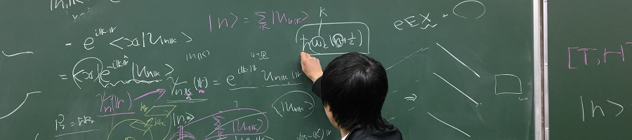

スピン班
My name is electron
本日はご来場下さり、誠にありがとうございます。
皆さんは、電子がどこにあるか知っていますか？……答えは、どこにでもいる、というべきでしょう。
中学校で習った通り、電子は原子の中にあり、原子核の周りを回っています。
つまり、何かがあればそこにはほとんどの場合に電子が存在します。
(*なお、「何もない」はずの真空中でも電子と陽電子が対生成・対消滅をしているというQEDのお話もありますが、これについては今は考えません。)
特に物質中では大量の数の電子が相互作用して、それが原因で物質が様々な性質を持ちます。
電荷とスピン
電子は、電気的現象に関わる【電荷】という性質に加え、磁気的現象に関わる【スピン】という性質があります。
一般に、磁気と回転とは密接に関わっている(例えば電流の周りにぐるっと磁場が生じたり、電流が一周すると磁場ができたり)のですが、スピンも御多分に洩れず、ある種の角運動量(**回転を表す量)になっています。
これを目で見るのが、Einstein-de Haas効果という現象です。
トポロジー
2016年度のノーベル賞は、【トポロジー】が物理現象に強く関わっていることを示した理論学者3人(Kosterlitz, Thouless, Haldane)に与えられました。
トポロジーとは、またの名を位相幾何学といい、対象の形を調べる学問です。
例えば、二つのパーツが組み合わさった知恵の輪を考えてみると、両方のパーツは完全なループではなく途中が切れていますが、この部分がもし繋がっていたらこの知恵の輪は外れるでしょうか？
……答えはNOです。なぜなら、片方のパーツを追っていくと、他方の作るループの中を１度だけ貫いてしまうからです。
このように、【穴】がいくつあるか、それを何回囲んでいるかがトポロジーでは重要になってきます。今回展示する【XY模型】という模型では、このことが強く効いてきます。
かなり理論寄りでややこしい展示になってしまったかもしれませんが、なるべく良さを伝えられるように工夫しましたので、楽しんでいただけると思います。
ご来場、お待ちしております。